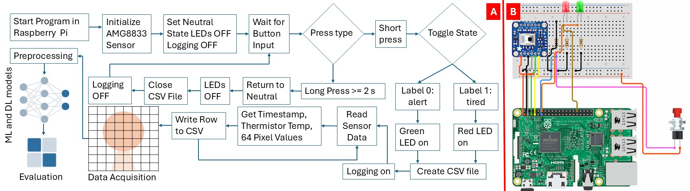
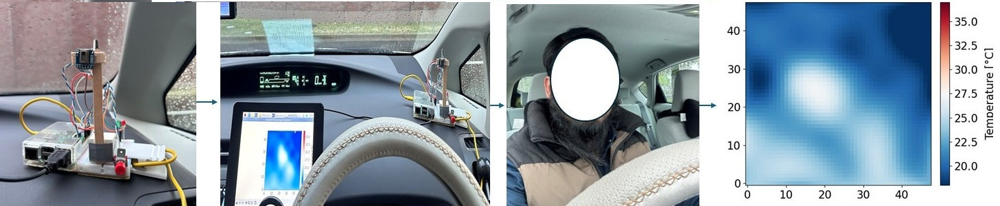
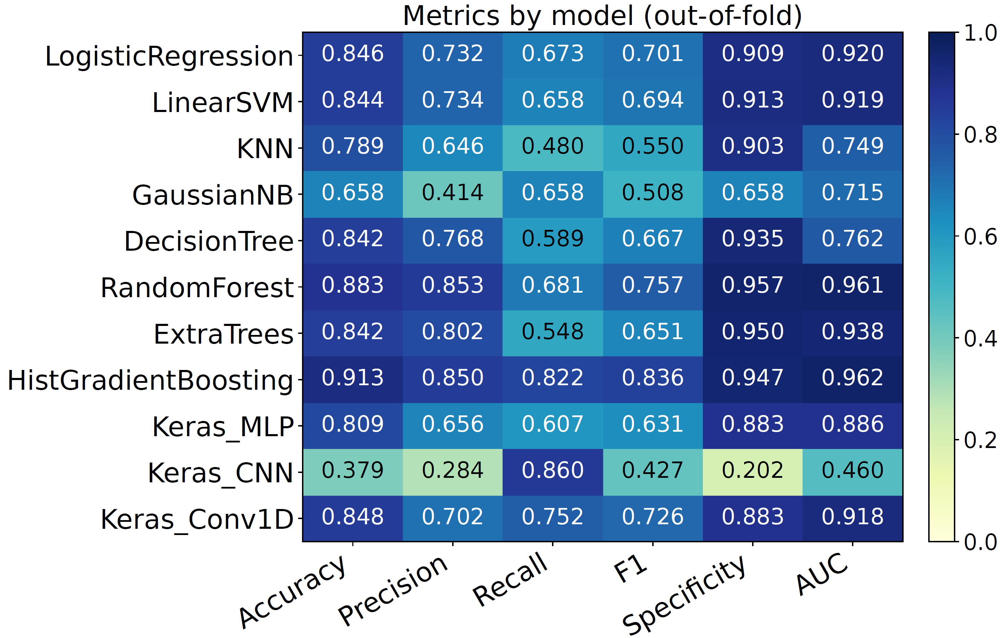
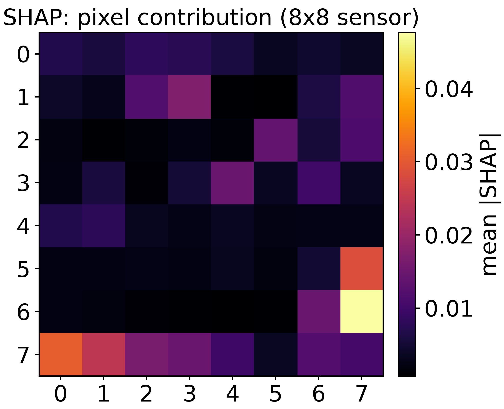
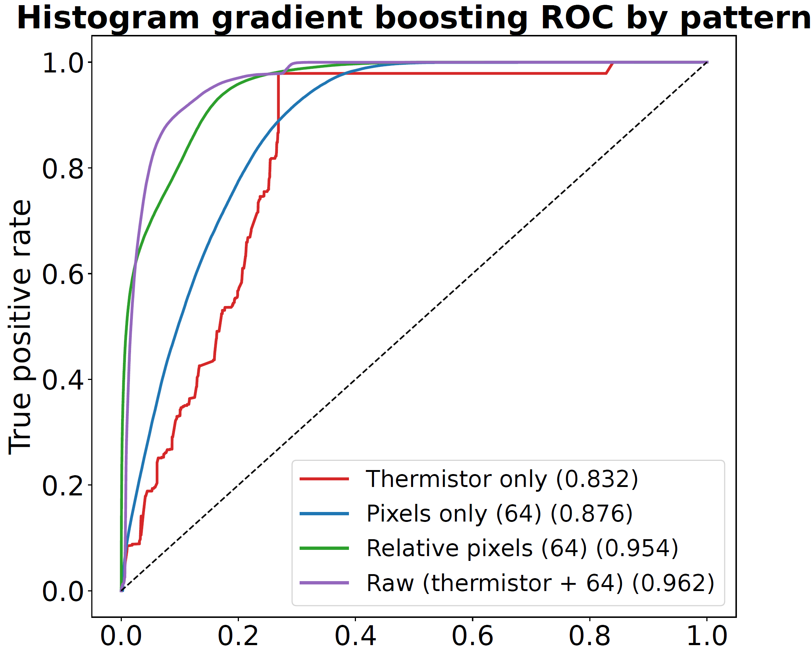
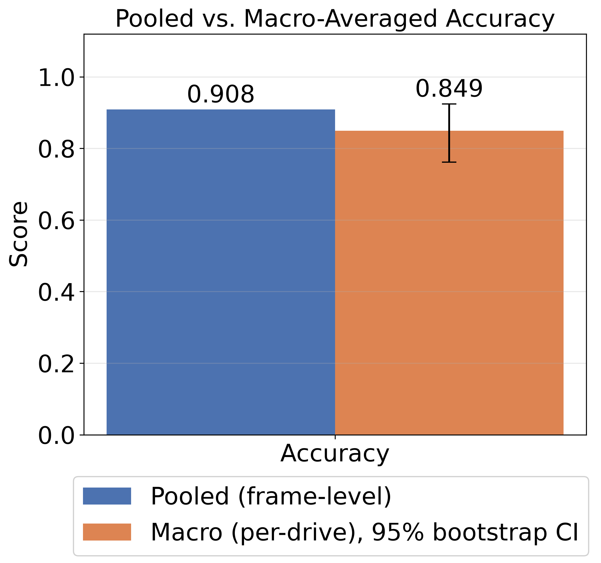
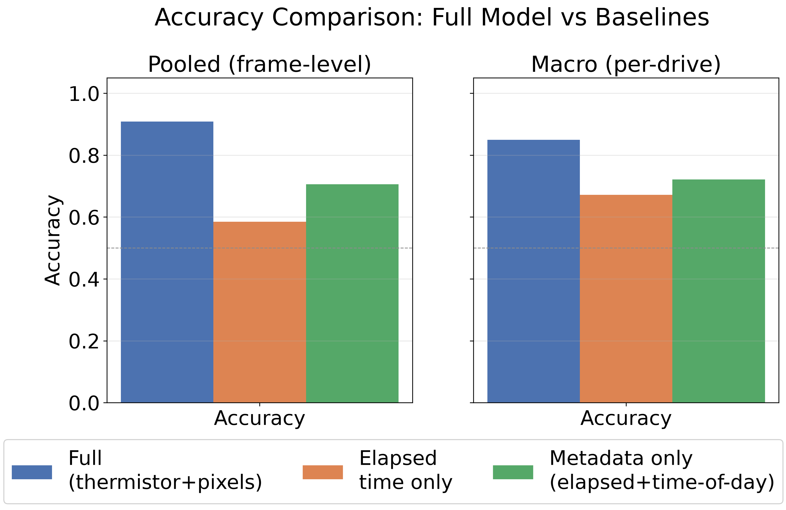

A thermal sensor with just 64 pixels can tell whether a driver is alert or fatigued — without ever recording an image a human could recognise.
A camera records a clear face that can identify a person. This project asks a simple question: can a sensor that cannot form a clear face still detect whether a driver is alert or fatigued? Results from about 2,000 km of real driving show that it can.
The hardware is simple: one low-resolution thermal sensor, one push button, two LEDs, and a Raspberry Pi for reading and recording the sensor data.

An AMG8833 infrared array sits on the dashboard facing the driver. It has 64 thermopiles arranged in an 8×8 grid. The resolution is too low to form a recognisable face, with roughly 14 cm covered by each pixel at the typical driver distance. The sensor also provides one reference temperature from its built-in thermistor, which mainly reflects the overall cabin temperature.
The driver reports the current state with one push-button press: a green LED and label 0 for alert, or a red LED and label 1 for fatigued. A Raspberry Pi reads the sensor at 8 Hz and saves the timestamp, reference temperature, all 64 pixel values, and the current label to a CSV file. No camera or network connection is required.
Every frame comes from ordinary driving — highways, narrow roads, and toll roads, by day and at night.

Over one month of regular driving, the logger collected 612,075 usable thermal frames across 40 separate drives, covering about 2,000 km in total from a single driver and vehicle.
Connects to the laptop and shows, live, exactly what the sensor is logging right now.
A second small monitor stays on and connected to the Raspberry Pi the whole time — showing the same coarse thermal pattern being logged, visible continuously. There is no step where data collection happens out of sight: anyone glancing at that screen sees exactly what the sensor sees, which is also exactly why this demo can show it to you live.
Each drive is stored as a CSV file containing raw thermal values, not as a video. To view the collected data, our program reconstructs each 8×8 frame as a thermal image and finds continuous periods of each state.
Our program checks every drive CSV and finds the longest continuous period of each self-reported state (alert or tired). If that period is longer than a few minutes, the program creates a thermal video with a temperature colour scale.
These clips are created directly from the collected CSV data. Each clip shows one continuous period of a self-reported state.
These two example clips show only a small part of the 40 real-world drives. The alert and fatigued states may look similar to the human eye, but the machine-learning model can detect small patterns in the thermal data.
Frames only 0.125 s apart are almost identical, so the model must be evaluated by whole drives rather than by randomly mixing individual frames.
A random split could place very similar frames in both the training and test sets, which could make the accuracy look higher than it really is. Instead, we use five-fold cross-validation with whole drives. Each drive stays entirely in either training or testing within a fold.

Histogram Gradient Boosting gave the best out-of-fold performance and clearly exceeded the majority-class baseline pooled accuracy of 0.731.
The reference temperature is the strongest single feature, so we tested whether the model was mainly learning cabin temperature instead of the driver's thermal pattern.


SHAP shows that the sensor's reference temperature is the strongest single feature. This raises an important question: is the model mainly tracking cabin temperature? After subtracting the reference temperature from the pixel values and using only the relative thermal pattern, the model still reaches 0.954 AUC, close to 0.962 with the full feature set. This shows that cabin temperature alone does not explain the result.
Combining all frames can make model performance look better than it really is. Evaluating each drive separately gives a more realistic result.


Models using only elapsed time or time of day, with no thermal input, perform much worse under the same evaluation method. This shows that the full model is not simply learning when fatigue is more likely to occur during the drive or day.
This is the main part of the live demo. We replay a real drive that was not used for training and compare what the different feature sets can predict from the low-resolution thermal data. The replay has two steps:
Replay Clip: — A short part of the full replay classification demo, shown at 3× the original playback speed. The video is explained below.The model was never trained on the drive shown in this replay. Watch the driver's self-reported label in the title and the model's live prediction below the thermal image. When the real state changes, the transition is marked on the screen so the self-reported state and model prediction can be compared directly.
Now look at the four bars on the right. The thermistor-only model reaches 0.832 AUC, and the pixels-only model reaches 0.876. After removing the common reference-temperature level, the relative-pixel model reaches 0.954, close to the full feature set at 0.962. This shows that the result is not explained by the reference temperature alone.
The demo has two parts: one shows what the sensor records, and the other shows how the trained model uses that data.
Watch your own 8×8 thermal pattern update in real time. The display shows the raw pixel grid, the thermistor reference temperature, and the relative thermal pattern. The sensor does not record a photograph or produce a recognisable face.
A real recorded drive is replayed through the trained models, as shown in the video above. The display shows the driver's self-reported state, the model's live prediction, and the outputs from the four feature sets.
Low-resolution thermal sensing can provide useful driver-state information without recording a clear image of the driver. It may offer a low-cost, more privacy-preserving alternative to cameras for continuous sensing in vehicles and other applications. This is a single-driver feasibility study, so the next step is validation with more drivers and vehicles.
The dataset and live demo paper are linked below.